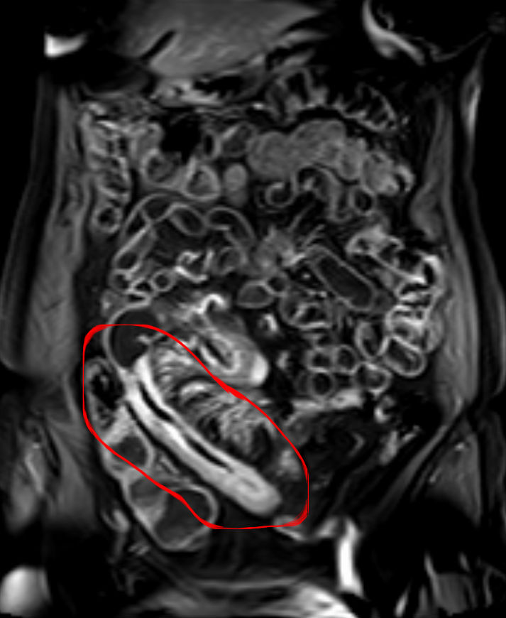

Ficha del catálogo
Enfermedad de Crohn
- Sistema
- Digestivo
- Modalidad
- RM
- Región
- Intestino delgado, íleon terminal y colon
- Dificultad
- Avanzado
Es una enfermedad inflamatoria intestinal crónica de causa desconocida que puede afectar cualquier segmento del tubo digestivo, desde la boca hasta el ano. Se caracteriza por inflamación transmural, distribución segmentaria y salteada, y una marcada tendencia a la formación de estenosis, fístulas y abscesos. El íleon terminal es la localización más frecuente y su curso alterna brotes con periodos de remisión.
Técnica
La enterografía por resonancia es el estudio de elección en pacientes jóvenes por su ausencia de radiación y su capacidad de distinguir inflamación activa de fibrosis. Requiere ayuno de 4 a 6 horas y la ingesta de un agente oral hiperosmolar bifásico, habitualmente entre 1 y 1.5 litros, durante los 45 a 60 minutos previos, para lograr distensión luminal adecuada. Se administra un antiespasmódico intravenoso para reducir el peristaltismo antes de las secuencias con contraste.
Qué observar
- Engrosamiento de la pared intestinal por encima de 3 mm en un asa bien distendida
- Realce mural intenso, con patrón estratificado en la fase activa
- Hiperintensidad de la pared en T2 con supresión grasa y restricción a la difusión
- Proliferación fibrograsa mesentérica y signo del peine por ingurgitación de los vasos rectos
- Estenosis, con valoración de la dilatación preestenótica que indica repercusión obstructiva
- Trayectos fistulosos, abscesos, adenopatías mesentéricas y afectación perianal
Hallazgos
Se observa engrosamiento parietal segmentario y asimétrico, típicamente de predominio en el borde mesentérico, con afectación salteada y segmentos sanos intercalados. En la fase activa la pared es hiperintensa en T2, restringe a la difusión y realza de forma intensa y estratificada, acompañada de proliferación fibrograsa y del signo del peine. En la enfermedad fibroestenótica predomina una pared de baja señal en T2 con realce tardío homogéneo, estenosis fija y dilatación proximal. Las complicaciones incluyen fístulas enteroentéricas, enterovesicales y perianales, así como abscesos y, rara vez, perforación libre.
Perlas
Distinguir inflamación activa de fibrosis cambia el tratamiento por completo: La actividad inflamatoria responde a terapia médica, mientras que una estenosis fibrosa establecida requiere dilatación o cirugía. La combinación de hiperintensidad en T2, restricción a la difusión y realce mural estratificado apoya la actividad, mientras que la baja señal en T2 con realce homogéneo tardío y ausencia de restricción sugiere componente fibrótico predominante.
Diagnóstico diferencial
- Colitis ulcerosa
- Afectación continua desde el recto, limitada a colon y mucosa, sin fístulas ni afectación del intestino delgado salvo ileítis por reflujo.
- Tuberculosis intestinal
- Compromiso ileocecal con ciego retraído, adenopatías necróticas y afectación peritoneal, en contexto epidemiológico.
- Ileítis infecciosa
- Engrosamiento leve y difuso de resolución espontánea, sin proliferación fibrograsa ni fístulas.
- Enteritis por radiación
- Afecta las asas dentro del campo irradiado, con antecedente terapéutico claro.
- Linfoma intestinal
- Engrosamiento marcado con dilatación aneurismática de la luz y adenopatías voluminosas, sin obstrucción proporcional.
Simuladores
- Asas colapsadas por distensión insuficiente, que aparentan engrosamiento parietal
- Realce fisiológico del íleon terminal en pacientes jóvenes
- Artefactos de movimiento intestinal que borran la definición de la pared
Por modalidad
- RM
- Método preferente por su contraste tisular, valoración de actividad frente a fibrosis y ausencia de radiación en enfermedad crónica
- TC
- La enterografía por tomografía es rápida y de elección en urgencias ante sospecha de absceso, obstrucción o perforación
- US
- Muy útil como seguimiento no invasivo: Mide el grosor parietal, valora la hiperemia con Doppler y detecta abscesos superficiales
Protocolo
Enterografía por resonancia con agente oral bifásico, antiespasmódico intravenoso y secuencias T2 de eco de espín rápido con y sin supresión grasa en planos coronal y axial, cine en tiempo real para valorar peristalsis, difusión con varios valores b y T1 con supresión grasa dinámica tras gadolinio, incluyendo fase entérica y fase tardía a los 7 minutos. Cuando existe enfermedad perianal se añade un estudio pélvico dedicado de alta resolución centrado en el canal anal.
Clasificación
La clasificación de Montreal describe la enfermedad según la edad al diagnóstico, con A1 por debajo de 16 años, A2 entre 17 y 40 y A3 por encima de 40; la localización, con L1 ileal, L2 colónica, L3 ileocolónica y L4 del tubo digestivo alto; y el comportamiento, con B1 inflamatorio no estenosante ni penetrante, B2 estenosante y B3 penetrante, añadiendo el modificador p para la enfermedad perianal. Para la afectación perianal se utiliza la clasificación de Parks, que ordena las fístulas en interesfinterianas, transesfinterianas, supraesfinterianas y extraesfinterianas, con o sin trayectos secundarios.
Errores frecuentes
- Informar engrosamiento parietal en asas mal distendidas por preparación oral insuficiente
- No diferenciar estenosis inflamatoria de estenosis fibrótica, lo que orienta mal el tratamiento
- Omitir la búsqueda dirigida de fístulas y abscesos, que exigen manejo distinto al brote inflamatorio simple

Crohn enterografia signo del peine ileon terminal fistula Montreal enfermedad inflamatoria intestinal